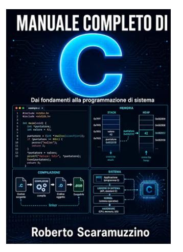

PROGRAMMAZIONE · LINGUAGGIO C
Manuale completo di C
Dai fondamenti alla programmazione di sistema
Un percorso in 31 capitoli e cinque parti, dalla prima riga di codice a processi, thread, segnali e socket di rete. Con lo standard C23 come riferimento, il manuale accompagna lo studio del C moderno fino alla programmazione di sistema.
Scopri il libro su AmazonCopertina flessibile · Prezzo e disponibilità su Amazon